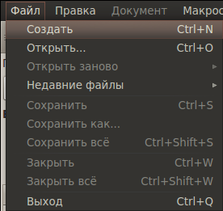
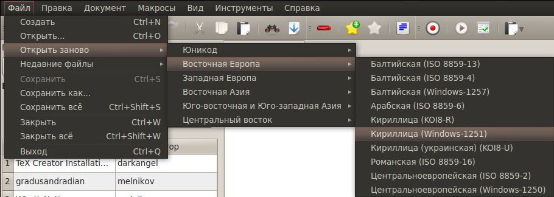
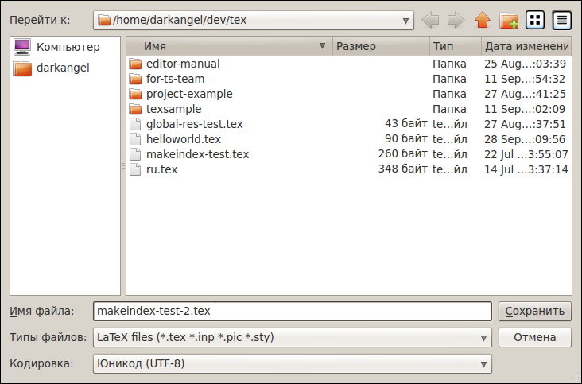
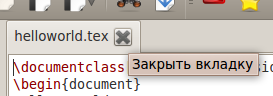

[Назад: 1.1 Настройки]
[Далее: 2. Основные функции]
Создание документа
Создание нового документа
Создать новый пустой документ можно нажав соответствующую кнопку на панели инструментов:

либо выбрав в меню Файл пункт Создать:

либо воспользовавшись сочетанием клавиш Ctrl+N.
Открытие файла
Открыть файл, уже существующий на диске, можно нажав кнопку на панели инструментов:

либо выбрав в меню Файл пункт Открыть...:

либо воспользовавшись сочетанием клавиш Ctrl+O.
После этого появится диалог, в котором предлагается выбрать, какой именно файл вы хотите открыть:
Вы можете изменить размер диалога для удобства навигации - размеры и положение на экране сохраняются после закрытия.
Также можно выбрать, в какой кодировке открывать файл (раскрывающийся список в нижней части диалога).
По умолчанию используется кодировка, указанная в настройках.
В одном окне редактора нельзя открыть один и тот же файл дважды. При попытке открыть один и тот же файл будет
выведено соответствующее информационное сообщение, а файл открыт не будет. Если же в файле имеются несохраненные
изменения, то будет предложено либо открыть файл заново, отбросив изменения, либо отменить открытие.
В разных окнах редактора допускается открытие одного и того же файла, однако каждый раз при попытке открытия
выводится предложение открыть файл в режиме "только для чтения", открыть его в обычном режиме, либо отменить открытие.
Файлы, для изменения которых у вас недостаточно прав доступа, всегда автоматически открываются в режиме
"только для чтения".
Если после открытия файла выяснилось, что он имеет другую кодировку (содержимое отображается некорректно,
в виде так называемых "кракозябр", то можно открыть данный файл заново,
выбрав в меню Файл пункт Открыть заново:

а затем выбрав нужную кодировку из списка.
Если файл перед этим был изменен и не сохранен, то будет запрошено подтверждение действия,
чтобы случайно не потерять сделанные в файле изменения.
Кроме того, можно открыть один из недавно открытых файлов, выбрав в меню Файл пункт Недавние файлы:
а затем выбрав требуемый файл из списка.
Всего в списке хранится до 15 файлов, наиболее старые из них вытесняются при открытии новых.
Сохранение файла
После работы над документом вы, скорее всего, захотите сохранить произведенные изменения.
Для этого можно воспользоваться пунктами Сохранить, Сохранить как..., или Сохранить все меню
Файл, либо воспользоваться сочетаниями клавиш Ctrl+S (для первого действия) или Ctrl+Shift+S
(для последнего). Для первых двух действий имеются также соответствующие кнопки на панели инструментов:


Если сохраняемый файл не существует на диске, то вместо действия Сохранить будет выполнено действие
Сохранить как....
Действие Сохранить все аналогично выполнению действия Сохранить для каждого открытого документа.
Действие Сохранить просто сохраняет файл, в то время как действие Сохранить как... вызывает диалог,
в котором предлагается указать расположение и имя файла, а также его кодировку
(по умолчанию используется текущая кодировка):

Если действие Сохранить как... было вызвано для уже существующего файла, а в диалоге было указано новое имя,
то старый файл сохраняетсятся, а также создается файл с новым именем, содержащий последние изменения, если они были,
либо идентичный исходному файлу, если изменений не производилось.
Закрытие файла
Чтобы закрыть файл, можно нажать соответствующую кнопку на вкладке с этим файлом:

либо воспользоваться пунктом Закрыть меню Файл,
либо нажать соответствующую кнопку на панели инструментов:

либо задействовать сочетание клавиш Ctrl+W.
Если закрываемый файл имеет несохраненные изменения, то будет предложено либо сохранить изменения перед закрытием,
либо отбросить эти изменения и закрыть файл, либо отменить закрытие.
Чтобы закрыть все файлы, можно воспользоваться пунктом Закрыть все меню Файл, либо задействовать
сочетание клавиш Ctrl+Shift+W.
Это дейстиве аналогично действию Закрыть для каждого открытого файла, с той разницей, что вместо того, чтобы
предлагать сохранить каждый файл отдельно, будет выведен диалог, в котором можно выбрать, какие файлы следует сохранить
(в том случае, если будет выбран вариант с сохранением файлов перед закрытием).
Действие Закрыть все автоматически вызывается перед закрытием окна редактора.
[Назад: 1.1 Настройки]
[Далее: 2. Основные функции]